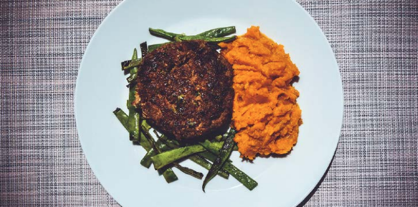

Hamburger balsamico

Description
Burger day! We love them. In winter on the frying pan and in summer on the barbecue if we have the possibility. Here with a different touch with fresh herbs and sweet potato puree with a touch of honey that goes with it. And as always made with fist class beef.
Recipe originally created by Let's Cook.
Ingredients
- Ground beef
- Garlic
- Sweet potato
- Honey
- Ketchup
- Parsley
- Green beans
- Balsamico
- Bread crumbs
- Onion
Step by step instructions
- The sweet potato:
Bring water with a pinch of salt to a boil.
Peel sweet potato and cut into 2cm cubes.
Boil 10min or until tender.
- Prepare the ingredients:
Cut the ends of the beans and divide them in half; on the long side and on the short side.
Chop parsley.
Grate onion and garlic in a bowl.
- The hamburgers:
Add chopped parsley, balsamico, ketchup, bread crumbs, minced meat, salt and pepper to the bowl.
Stir well until all is well incorporated.
- Burger time:
Heat a drizzle of oil in a pan.
Form hamburgers and fry to the desired doneness.
- The beans:
In another pan, heat oil and saute the beans for a few minutes. Condiment with salt and pepper.
- The sweet potato:
Mince sweet potato with a fork. Add honey, salt and pepper.
- Serve the burgers with sweet potato mash and beans
Go to homepage